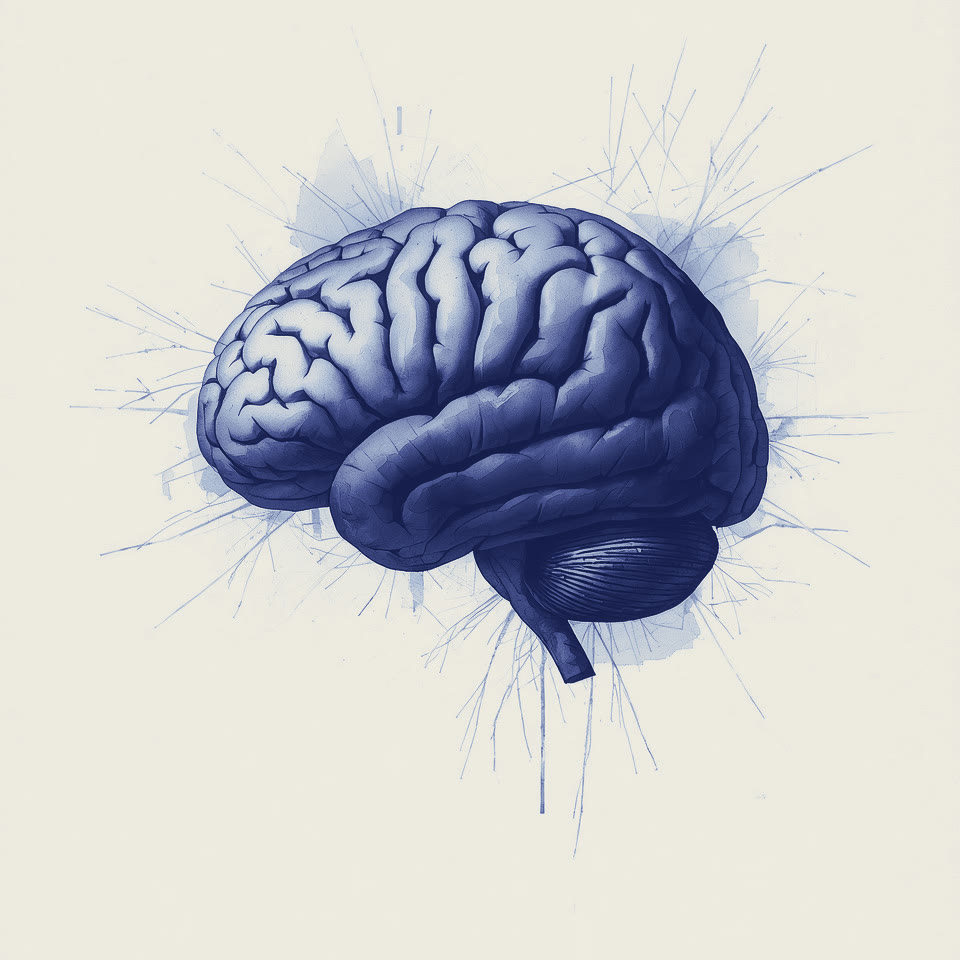

Visual education for neurological care
Reimagining art as a language for understanding neurological care
Lienzo transforms complex neurological procedures and diagnoses into clinically validated visual education that patients and families can actually understand.
The problem
The stress of the unknown
Major pediatric hospitals perform thousands of complex procedures each year. For families, entering this environment brings immense anxiety, especially when medical information is delivered in dense clinical terms or a language they do not speak.
Many handouts also leave out the patient. Young patients and their siblings are often left confused, scared, and out of the loop of conversations about their own health. Complex medical descriptions create an unfair barrier, making high-quality care feel distant to children and inaccessible to families navigating it for the first time.
The answer
Bridging the gap through pictures
Lienzo uses a universal language: art. By turning intricate medical steps into clear, intuitive visual guides, we give patients and families a clearer picture of their stay at the hospital.
What Lienzo makes
Neuroscience, translated.
Three ways the same clinically reviewed artwork reaches families: a shared library, a hospital platform, and custom commissions.
Education Library
For families and cliniciansA growing set of clinically reviewed visual guides and teaching stories, organized by condition and procedure.
Hospital Platform
For hospitals and clinicsPrintable, digital, and multilingual guides from the library, reviewed with each hospital's team and handed out as part of standard care.
Custom Studio
For care teamsHospitals commission Lienzo to build education specific to their own procedures and patient populations.
Families build understanding the same way during a health crisis, one layer at a time. The name comes from Deborah's first language, and it's an invitation to people from every background.
Meet Deborah